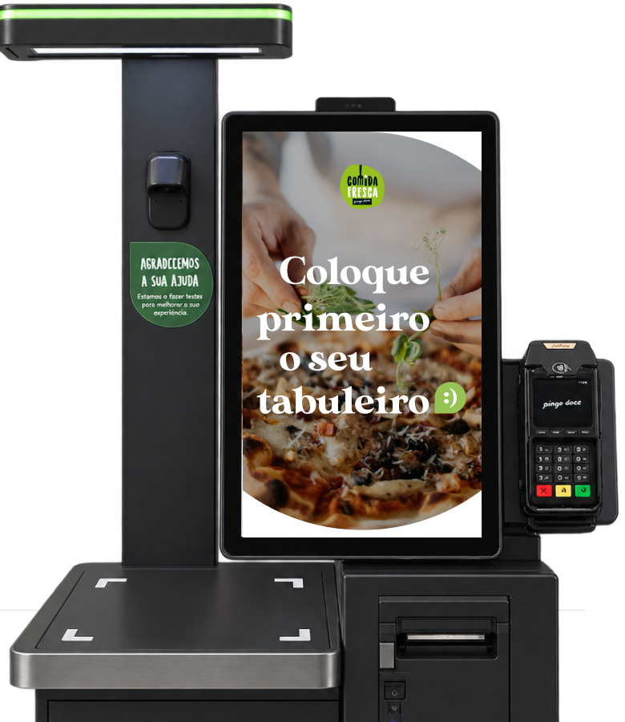
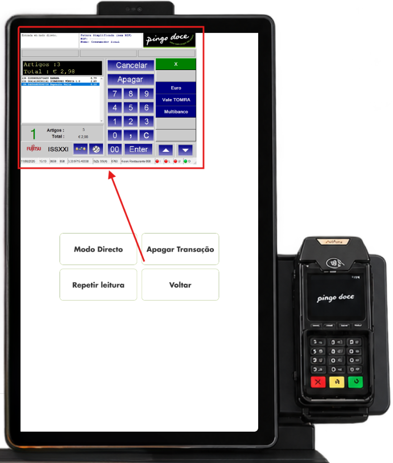
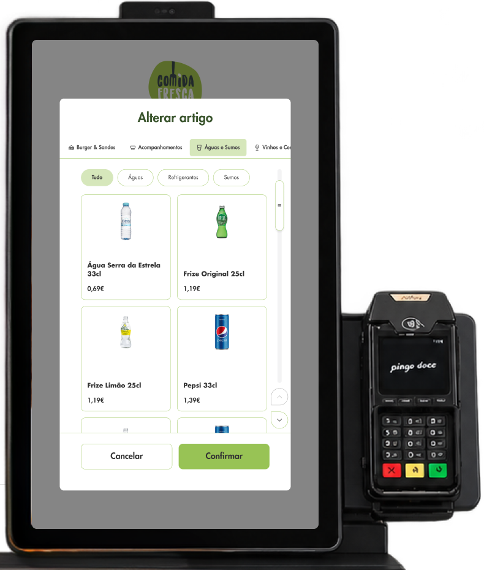
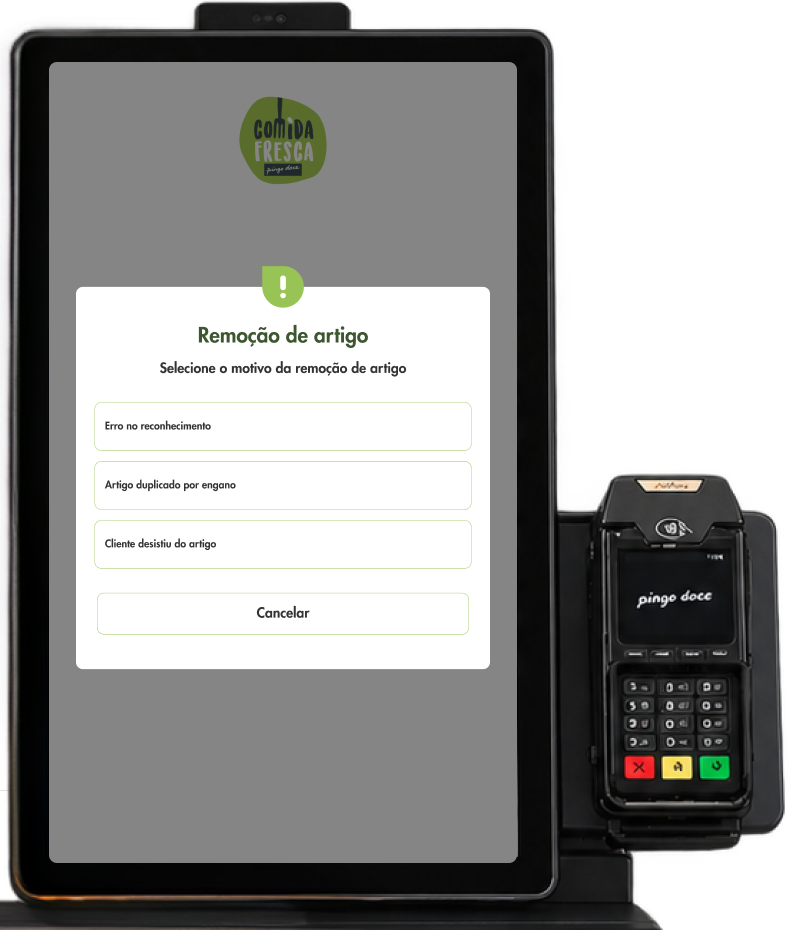
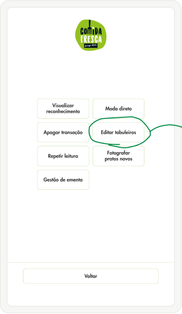
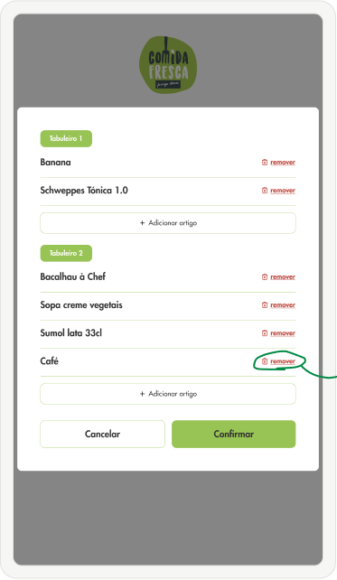
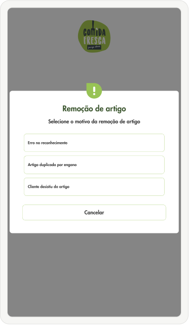
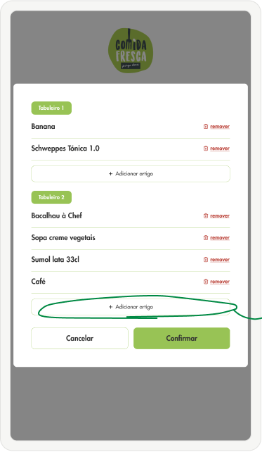
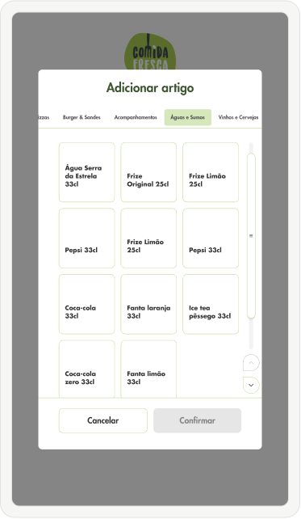
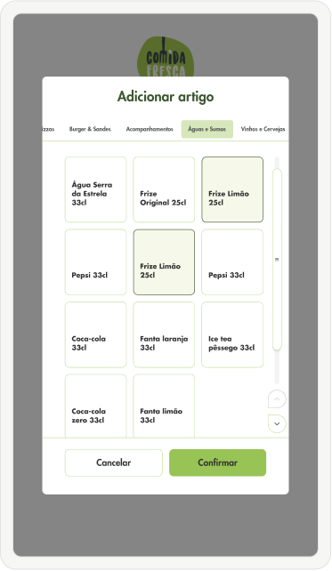

Como simplifiquei o processo de adição e remoção de artigos do quiosque Pingo Doce.
- Cliente
- Fujitsu, para o Pingo Doce
- Modelo
- Pacote de horas via Monday
- Dispositivos
- RRS, quiosques Pingo Doce
- O meu papel
- UX/UI Designer
Desafio
Corrigir um artigo mal lido obrigava o supervisor a usar o POS numa janela pequena e difícil de operar.
Abordagem
Uma opção dedicada para editar tabuleiros, desenhada dentro das limitações técnicas do RRS.
Resultado
Fluxos de remoção e adição de artigos no menu do supervisor, com o motivo de remoção sempre registado.
Um pacote de horas, muitos pedidos pequenos
A Fujitsu contrata um pacote de horas à Monday para responder a pedidos sobre as máquinas do Pingo Doce: alterações de fluxo, novos requisitos legais, novos métodos de pagamento.
Cada pedido chega com o seu próprio briefing, com as respetivas limitações técnicas e exigências do cliente.

Um POS pequeno demais para corrigir um erro
No RRS, quando há um problema numa transação, o operador passa o cartão de supervisor e entra em Modo Direto, que abre o POS, o sistema de faturação.
A janela é pequena, e os operadores queixavam-se de que corrigir ou remover um artigo ali era difícil.
Um quiosque que lê o tabuleiro por câmara e sensores, sem que o cliente tenha de registar qualquer artigo.

Uma máquina com recursos limitados
Para ser rápido e focado no reconhecimento de artigos, sem que o cliente tenha de passar por quase nenhum processo, o RRS foi desenvolvido com algumas limitações técnicas: não suporta imagens nem grandes processamentos.
Com estas limitações, muitas soluções visuais, como menus com ícones e imagens dos produtos, ficam descartadas desde o início.
Pouco me valia criar um ecrã bonito e cheio de funcionalidades que o RRS não conseguia comportar.

Uma opção dedicada para editar tabuleiros
Ao passar o cartão de supervisor, o RRS ganha uma opção dedicada para editar tabuleiros. Neste ecrã é possível:
- Remover artigos individualmente, indicando sempre o motivo da remoção.
- Adicionar artigos em volume, vários de uma só vez.
Deve ser sempre indicado o motivo da remoção de um artigo.

Remoção e adição de artigos
Editar tabuleiros passou a fazer parte do menu do supervisor, ao lado de Apagar transação.
Estes fluxos resolvem um problema real dentro das limitações técnicas e respeitam as exigências do negócio, facilitando a experiência do supervisor.





